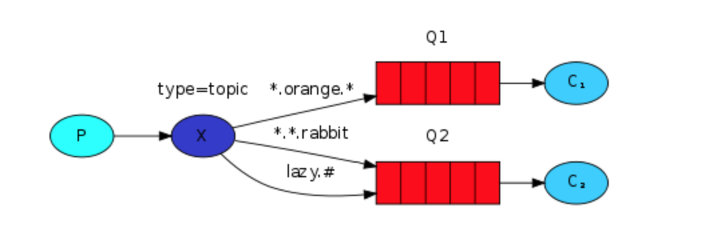

内容摘要
Although using the direct exchange improved our system, it still has limitations - it can't do routing based on multiple criteria.
In our logging system we might want to subscribe to not only logs based on severity, but also based on the source which emitted the log. You might know this concept from the syslog unix tool, which routes logs based on both severity (info/warn/crit...) and facility (auth/cron/kern...).
That would give us a lot of flexibility - we may want to listen to just critical errors coming from 'cron' but also all logs from 'kern'.
To implement that in our logging system we need to learn about a more complex topic exchange.
虽然使用direct exchange改进了我们的系统，但它仍然有局限性——它不能基于多个标准进行路由。
在我们的日志系统中，我们可能不仅希望根据严重性订阅日志，还希望根据发出日志的源订阅日志。你可能从syslog unix工具中知道这个概念，该工具根据严重程度(info/warn/crit…)和工具(auth/cron/kern…)来路由日志。
这将给我们很大的灵活性——我们可能希望只监听来自cron的关键错误，但也要监听来自kern的所有日志。
要在日志系统中实现这一点，我们需要了解更复杂的主题交换。
Topic exchange
Messages sent to a topic exchange can't have an arbitrary routing_key - it must be a list of words, delimited by dots. The words can be anything, but usually they specify some features connected to the message. A few valid
routing keyexamples: "stock.usd.nyse", "nyse.vmw", "quick.orange.rabbit". There can be as many words in the routing key as you like, up to the limit of 255 bytes.The
binding keymust also be in the same form. The logic behind the topic exchange is similar to a direct one - a message sent with a particular routing key will be delivered to all the queues that are bound with a matching binding key.However there are two important special cases for binding keys:
*(star) can substitute for exactly one word.
# (hash) can substitute for zero or more words.
发送给topic exchange的消息不能有随意的routing_key, 它必须是一系列的单词，以.划分，单词可以是任意的，但是经常命名为和消息有所关联。一些有效的routing_key，比如stock.usd.nyse, nyse.vmw, quick.orange.rabbit. 最大长度限制为255字节。
binding_key必须使用同样的格式。topic exchange背后的逻辑和direct exchange很像，一个带有特定routing_key的消息会被发送到与binding_key匹配的所有的队列上。
然而有两种比较重要的binding_key例子
- * 代表匹配一个单词
- # 代表匹配多个单词

In this example, we're going to send messages which all describe animals. The messages will be sent with a routing key that consists of three words (two dots). The first word in the routing key will describe a celerity, second a colour and third a species: "
. . ". We created three bindings: Q1 is bound with binding key "*.orange.*" and Q2 with "*.*.rabbit" and "lazy.#".
These bindings can be summarised as:
Q1 is interested in all the orange animals.
Q2 wants to hear everything about rabbits, and everything about lazy animals.
在这个例子中，我们将要发送一些描述动物的消息，这些消息会以包含三个单词(两个点)的routing_key来表示，
第一个单词表示敏捷，第二个表示颜色，第三个表示物种，"
我们创建了三个绑定， Q1 的 binding key "*.orange.*" Q2 绑定 "*.*.rabbit" 和 "lazy.#"
这些绑定可以概括未：
- Q1关注橘色的动物的行为
- Q2关注所有关于兔子和所有懒惰的动物的信息
A message with a routing key set to "quick.orange.rabbit" will be delivered to both queues. Message "lazy.orange.elephant" also will go to both of them. On the other hand "quick.orange.fox" will only go to the first queue, and "lazy.brown.fox" only to the second. "lazy.pink.rabbit" will be delivered to the second queue only once, even though it matches two bindings. "quick.brown.fox" doesn't match any binding so it will be discarded.
What happens if we break our contract and send a message with one or four words, like "orange" or "quick.orange.male.rabbit"? Well, these messages won't match any bindings and will be lost.
On the other hand "lazy.orange.male.rabbit", even though it has four words, will match the last binding and will be delivered to the second queue.
routing_key=quick.orange.rabbit的消息会被发送到两个队列，quick.orange.fox 只会发到第一个队列，lazy.brown.fox会发到第二个队列，lazy.pink.rabbit只会给第二个队列发送一次，虽然它跟两个binding_key都匹配。
如果我们毁掉合约，发送包含一个单词或者四个单词的消息，会发生什么？ "orange" 和 "quick.orange.male.rabbit" 都会被丢弃。（* 只能匹配一个单词）
但是lazy.orange.male.rabbit会被发送到第二个队列。（因为#能匹配多个单词）
note: Topic exchange
Topic exchange is powerful and can behave like other exchanges.
When a queue is bound with "#" (hash) binding key - it will receive all the messages, regardless of the routing key - like in fanout exchange.
When special characters "*" (star) and "#" (hash) aren't used in bindings, the topic exchange will behave just like a direct one.
topic exchange非常的强大，能拥有其他exchange_type的功能。
当队列被绑定的binding_key 是 #时(代码中仍然是routing_key='#')，它将接收所有的信息，忽略生产者声明的routing_key，就像fanout一样。
当 * 和 # 都没有被用到时，功能就和direct一模一样。
示例代码
We're going to use a topic exchange in our logging system. We'll start off with a working assumption that the routing keys of logs will have two words: "
. ".
routing_key包含两个单词，.严重性
emit_log_topic.py
#!/usr/bin/env python
import pika
import sys
connection = pika.BlockingConnection(
pika.ConnectionParameters(host='localhost'))
channel = connection.channel()
channel.exchange_declare(exchange='topic_logs', exchange_type='topic')
routing_key = sys.argv[1] if len(sys.argv) > 2 else 'anonymous.info'
message = ' '.join(sys.argv[2:]) or 'Hello World!'
channel.basic_publish(
exchange='topic_logs', routing_key=routing_key, body=message)
print(" [x] Sent %r:%r" % (routing_key, message))
connection.close()
receive_logs_topic.py
#!/usr/bin/env python
import pika
import sys
connection = pika.BlockingConnection(
pika.ConnectionParameters(host='localhost'))
channel = connection.channel()
channel.exchange_declare(exchange='topic_logs', exchange_type='topic')
result = channel.queue_declare('', exclusive=True)
queue_name = result.method.queue
binding_keys = sys.argv[1:]
if not binding_keys:
sys.stderr.write("Usage: %s [binding_key]...\n" % sys.argv[0])
sys.exit(1)
for binding_key in binding_keys:
channel.queue_bind(
exchange='topic_logs', queue=queue_name, routing_key=binding_key)
print(' [*] Waiting for logs. To exit press CTRL+C')
def callback(ch, method, properties, body):
print(" [x] %r:%r" % (method.routing_key, body))
channel.basic_consume(
queue=queue_name, on_message_callback=callback, auto_ack=True)
channel.start_consuming()
消费者
接收所有消息
python receive_logs_topic.py "#"
接收来自设备kern的日志
python receive_logs_topic.py "kern.*"
接收所有严重性为critical的日志
python receive_logs_topic.py "*.critical"
一个队列创建多个绑定
python receive_logs_topic.py "kern.*" "*.critical"
生产者
生产消息
python emit_log_topic.py "kern.critical" "A critical kernel error"